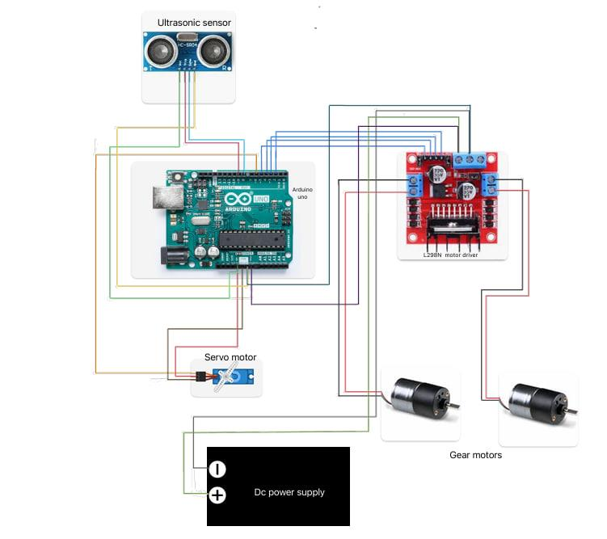
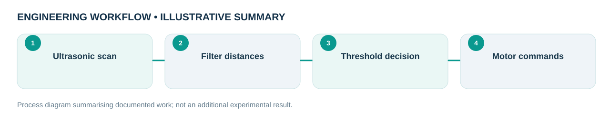

Engineering problem
Can a compact embedded controller detect obstacles and command a mobile platform using low-cost sensing and actuators?
Built and programmed an Arduino-based obstacle-avoiding tracked mobile robot for an embedded-systems university assignment. The system integrates ultrasonic sensing, servo scanning, DC motor driving and threshold-based motion logic.
My role and technical ownership
I built, wired, programmed and tested the physical prototype, which was submitted as a two-person university group assignment. The photograph shows our actual hardware.
How I approached the work
- Integrated Arduino Uno, HC-SR04 ultrasonic sensing, an actuated scanning servo, L298N motor control and DC geared motors on a tracked platform.
- Implemented ten-reading distance averaging with range filtering, then used a front-distance threshold to activate stop, reverse and turn functions.
- Structured motor actions into reusable embedded functions and monitored sensed distances through serial output.
- Used simple timed motion rather than localization, mapping or route planning, making behavior easier to reproduce and debug.
What the evidence shows
The report supplies pin-level wiring and the full Arduino code; the uploaded photograph independently documents the assembled physical prototype. The implemented loop uses a 40 cm threshold.
Design files, models & results
Original CAD screenshots, simulation plots or project photographs are shown wherever they were available. Select a figure to open the larger file. Workflow graphics are clearly labelled as illustrative.


Limitations and engineering learning
The report describes choosing the clearer side, but the supplied final loop alternates turning with turnCounter. This inconsistency is disclosed rather than presenting unverified path planning.
Engineering takeaway: The written description says the robot chooses the clearer side, but the final code alternates turn direction with a counter. The website therefore describes the code behavior rather than claiming a validated best-path planner.